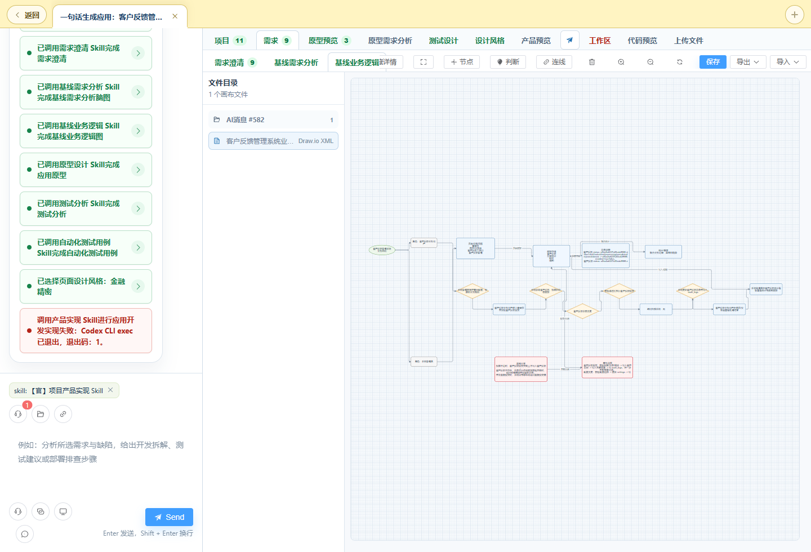

先选对会话类型，再让平台沿着七阶段研发链路把产物层层推进。
会话类型代表不同起点与自动化深度，选对入口能大幅减少后续澄清成本。
| 会话类型 | 适合谁 / 何时用 | 典型输入 | 覆盖链路 |
|---|---|---|---|
| 对话 | 探索、咨询、分析资料、临时调用能力 | 一个问题、一段资料、一个文件 | 手动按需 |
| 一句话需求 | 只有用户故事，但要专业需求分析结果 | 「作为客服主管，我希望…以便…」 | 先澄清后生成 |
| 一句话生成应用 | 希望快速得到可运行产品 | 「做一个客户反馈管理系统，支持…」 | 全链路自动 |
| 从需求澄清开始 | 已有初步需求，想直接确认与基线化 | 需求片段、会议纪要、待确认清单 | 阶段 2 → 7 |
| 已有原型图 | 已有 Axure / HTML 原型或截图 | 原型 ZIP、HTML、截图、页面说明 | 原型解析 → 7 |
无论哪种研发型会话，背后都遵循同一条链路。每个阶段读取上一阶段产物，产出结构化结果。
| 阶段 | 核心产物 | 验收要点 |
|---|---|---|
| 项目澄清 | 项目范围、角色、业务对象、规则、风险与下一步研发输入，沉淀为项目基线。 | 边界是否清晰、角色与对象是否齐全。 |
| 需求澄清 | 可打磨 / 重写 / 接受 / 不接受的结构化需求条目。 | 需求是否都来自当前输入、有无幻觉新增。 |
| 基线需求分析 | 页面节点、功能 / 原子功能、原子测试种子、需求→功能→测试追踪矩阵。 | 结构是否可被后续消费、追踪是否不漏。 |
| 基线业务逻辑 | 业务流程图、状态机、数据流、权限矩阵、异常补偿。 | 是否描述当前系统真实业务，而非历史示例。 |
| 原型设计 | 可预览 HTML 原型，含页面结构、字段与交互入口。 | 页面 / 字段 / 状态是否支撑核心业务流。 |
| 测试分析 | 测试分析矩阵、等价类 / 边界值 / 状态转换模型、原子测试用例、自动化用例。 | 覆盖是否完整、每个测试点是否只验证一个条件。 |
| 产品实现 | 真实源代码、运行预览服务，遵循所选设计风格。 | 预览是否可访问、构建 / 启动是否正常。 |
会话详情页左侧为每个阶段显示执行卡片，用颜色标记进度。
已完成 进行中 失败 等待中
